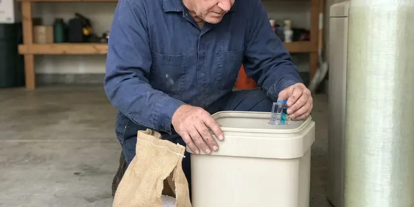

Gas Leak Repair in Huntersville, NC
Licensed gas plumbers in Huntersville, NC who pressure test the system before and after the fix. HFN Plumbing handles connectors, interior pipe and buried lines.
- Licensed Gas Plumbers
- Gauge Pressure Tested Repairs
- Yard Line Repairs
- Fully Insured Gas Work

Licensed Gas Leak Repairs in Huntersville, NC.
If you smell gas, leave first and call the utility from outside. Then call HFN Plumbing to fix the leak.
Nearby Gas Leak Plumbers in Huntersville, NC
HFN Plumbing handles the gas calls other trades pass on, leaks inside finished walls and red-tagged appliances waiting on a licensed repair. Every tech on these calls carries the required gas license. We carry insurance too. Once the leak is fixed, we test it, document it and set up the relight with the utility.
Some of what we do:
- Red tag repairs and utility relight scheduling
- Propane piping and connector repair on the house side
- Electronic combustible gas detection at each joint

Additional Plumbing Repair Services in Huntersville, NC
We offer expert plumbing repair services across Huntersville, NC to fix leaks, restore flow, and keep your system running smoothly.




Huntersville water softener repair specialists


Customers
Why Choose HFN Plumbing for Gas Leak Repair in Huntersville, NC?
Gas does not give second chances. A leak near a water heater pilot or a furnace igniter can light off without any warning. We test the whole system, write down the readings and leave no fitting capped loosely when we pack up for the day.
- Licensed for Gas, Techs on gas calls hold the gas license the work requires.
- Local Techs, Our plumbers work Huntersville every day and know where the old steel lines run, so the search goes faster.
- Whole System Check, We test every branch and appliance, not just the leak you called about.
Citywide Coverage
Nights and weekends are when a lot of gas leaks get noticed, usually because the furnace kicks on or someone starts dinner. The after-hours line goes to a person. After the utility clears it, we send a tech carrying parts for the usual fixes.
Experienced Team
The pipe we work with spans eras, black iron with threaded fittings, CSST from TracPipe and Gastite, and yellow polyethylene for buried runs. Copper gas lines still turn up in some older homes too. Each needs its own fittings. Mixing brands at a joint is a fast way to fail an inspection, so we do not.
Safety-First Approach
Utility red tags are respected. We do not remove a lock or a tag the utility placed. Once the repair passes, the utility removes the lock, and some utilities let a licensed plumber handle the relight.
Trusted Certified Huntersville Plumbing Services Professionals
At HFN Plumbing, we are proud to offer certified plumbing services throughout Huntersville, NC. Credentials matter in this trade. Every repair, install and maintenance visit follows strict safety and quality rules, and the plumbers doing the work carry recognized industry credentials.
Call Us Now PHCC Plumbing Contractor Recognition
PHCC Plumbing Contractor Recognition Better Business Bureau (BBB) Accreditation
Better Business Bureau (BBB) Accreditation Angi Certified Pro
Angi Certified Pro ISO 9001 Quality Management Certification
ISO 9001 Quality Management CertificationLicensed Gas Leak Repair in Huntersville, NC
Appliance Gas Line Repair in Huntersville, NC
Most appliance leaks show up at the flex connector or the shutoff valve behind the appliance, usually right at a flare nut where the two meet. Every time somebody slides the stove out to mop, the connector takes another bend. Valves weep at the stem. The fix is usually a new coated connector and a new ball valve, plus a drip leg if the appliance lacks one. Each joint gets a detector pass and a bubble test before the pilot is lit again.

Gas Line Repair & Replacement in Huntersville, NC
Black iron pipe with threaded fittings is still the most common interior gas pipe, and the leak is nearly always at a thread, not in the middle of a length. We take the joint apart, clean the threads and remake it with fresh gas-rated sealant. Cracked fittings get replaced. Where a length has rusted badly, usually near a damp crawlspace vent, we cut back to sound pipe and splice in new. Every remade joint gets a detector check and a pressure test.
Emergency Gas Leak Services in Huntersville
That sulfur smell is mercaptan, an odorant the supplier adds because natural gas and propane have almost no smell on their own. If the smell is strong, walk out and leave the door open behind you. Do not flip switches. Once the utility has made the meter safe, we come out and make the repair. We bring fittings, pipe and connectors on the truck, so most leaks are fixed in one trip.
Outdoor Gas Line Repair in Huntersville
Grills, fire pits, pool heaters and patio heaters often sit at the end of a long buried line that nobody has looked at since it went in. More outdoor lines get hit by shovels and fence augers than fail from rust. Dead grass is a tell. The outdoor branch gets isolated and tested by itself, then the bad run is replaced with polyethylene and a tracer. Above-ground stub-ups get a new riser and a shutoff valve.
Interior Gas Pipe Repair in Huntersville, NC
Inside the house, gas leaks hide at unions in the basement and at the threaded nipple behind the furnace, places nobody looks. We work from the meter inward, testing each section as we go. Drywall stays intact when possible. Rerouting with CSST past a leak in a finished wall is often cheaper than cutting and patching drywall. Nothing is turned back on until the test gauge holds steady.
Appliance Connector Replacement in Huntersville
Old uncoated brass connectors, the kind made before the mid-1970s, are the subject of consumer safety warnings because the flare nut can separate from the tube. Any of those still in service should be replaced. We see them weekly. In its place goes a coated stainless connector and a new shutoff valve, plus a drip leg if the code calls for it. Bubble testing follows before the burner is lit.
Commercial Gas Leak Repair in Huntersville
Commercial gas piping often runs at 2 psi or higher with regulators at each appliance bank, so a leak test there is not the same as a house test. Regulator vents and lockup pressure get checked along with every joint. Rooftop units leak too. Where downtime costs you money, we isolate only the affected branch and keep the rest of the building running. Staff get a short briefing on the shutoff locations.

Gas Meter to House Line Repair in Huntersville, NC
The run from the utility meter to the house shutoff is the homeowner's pipe in most service areas, so the repair falls to a plumber and not the gas company. It is also the stretch that takes the most weather, sitting in the sun or the soil. Risers rust at grade. We replace the riser or the buried run, pressure test it and leave the meter connection ready for the utility to open the meter. Expect a half day for a typical riser swap.
Gas Leak Plumbers Near You in Huntersville, NC
Outdoor gas lines produce a surprising share of our calls, because pool heaters and fire pits sit at the end of long buried runs. Fence augers and sprinkler trenching cut more of these lines than rust does. Look for dead grass. We isolate that branch and test it separately from the house.
Homes on propane outside Huntersville get the same service as homes on the gas main. The test covers everything from the regulator at the tank to the last appliance valve. Your propane supplier handles the tank itself, and we work alongside them when a leak sits right at the tank connection or first-stage regulator. Have the supplier's name handy when you call.
HFN Plumbing at a Glance
- Fully licensed plumbing team covering Huntersville, NC
- Same-day appointments and 24/7 emergency response
- Upfront, flat-rate pricing before work begins
- 4.8-star rated by 840+ North Carolina customers
Huntersville Map
Huntersville Information
- Population
- 64,688
- Area codes
- 704/980/336
- Service area
- Huntersville and towns within a 40 mile drive
- Nearby
- Mooresville, Concord, Kannapolis, Charlotte
Coastal areas have sandy soil and high water tables, which affect how sewer lines and septic systems function. Ground movement strains rigid gas pipe at threads and risers, so Huntersville homes with older yard lines get more leak calls than most.
Expert Services
Call HFN Plumbing for honest, reliable plumbing from people who know the trade in Huntersville, NC.
Our Specialized Plumbing Services in Huntersville, NC
At HFN Plumbing, you get every kind of plumbing service from one company across Huntersville, NC. We go from leak detection all the way to full system installations, for homes and commercial buildings, and we do it quickly at a fair price. Take a look at our core services below:


What Happens on a Gas Leak Visit in Huntersville, NC
What happens when you call us for a gas leak repair visit.
Call Us
Once you are outside and the utility has been called, phone (980) 364-4317. We ask where the smell is and whether the meter was shut or tagged.
Make It Safe
The tech confirms the gas is off, opens the space and clears ignition sources before any tools come out.
Find the Leak
A gauge confirms the system is losing pressure, then a sniffer and bubble solution narrow it to one joint.
Frequently Asked Questions About Gas Leak Repair in Huntersville
Expect $150 to $400 for a minor fix like remaking a connection, and $500 to $2,500 or more when sections of pipe need replacing. The final price depends on pipe material and access. Testing comes first. The price is set after the leak is located and before the repair begins, and it holds.
No, they measure carbon monoxide, which comes from burning gas badly, not from raw gas leaking out of a pipe. A CO alarm stays quiet during a gas leak. Raw gas needs your nose or a separate explosive gas alarm.
Tightening a fitting with gas still on can crack an old union or strip a thread, and the leak gets worse. Licensed plumbers handle gas lines for a reason.
The utility found a leak or unsafe condition and shut the gas off at the meter until it is repaired. A licensed contractor has to make the repair and pass a pressure test.
There is usually no required schedule for homeowner gas piping, but a leak test every few years makes sense on older homes or long yard lines. Have it done sooner if the bill jumps or an appliance flame turns yellow.
Brand rarely matters for the gas side. Whether it is a Rheem water heater or a GE range, the connection is a standard flare or pipe thread fitting on the back. We size the connector to the appliance's BTU rating and match the inlet size on the valve.
Dispatch sends the closest gas-qualified tech as soon as the utility confirms the area is safe, and in most of Huntersville that means a few hours or less. Traffic and call volume change the exact time. You get a window when you call and a heads-up when the truck is close.
We stand behind our gas work with a written workmanship warranty. A leak at our repair during the warranty gets fixed by us.
What People Are Saying About Our Plumbing Experts?

Mark T.
The floor drain in our office break room backed up every few weeks. The plumber ran a cable, then put a camera down and found roots at a joint about thirty feet out. Seeing it on the screen made the decision easy.
Drain Cleaning · Huntersville, NC
Laura S.
Our 40 gallon tank started leaking from the bottom after thirteen years. The tech hauled the old one out, set a new unit with a fresh expansion tank, and had hot water running in about four hours. He took the old tank with him too.
Water Heater Replacement · Concord, NC
James P.
Our restaurant had a slow leak at the hand sink that was rotting the cabinet base. HFN Plumbing came in at six in the morning before prep, replaced the trap and both supply lines, and was packed up before my first cook clocked in.
Commercial Plumbing · Kannapolis, NC
Lisa C.
Water was pouring out from under the washing machine on a holiday weekend. HFN Plumbing talked me through closing the valves over the phone and had a plumber at the house within ninety minutes. It was a burst fill hose.
Emergency Plumbing · Charlotte, NC
Diane F.
My kitchen faucet had dripped for months and I finally got tired of hearing it at night. HFN Plumbing came out the next morning, replaced the cartridge and the O rings, and tightened a loose base that was letting water under the sink.
Faucet Repair · Charlotte, NCMarcus H.
Grease from the fryer line kept clogging the kitchen drain at my diner. HFN Plumbing hydro jetted the line after closing, showed me the buildup on camera, and set us up on a quarterly cleaning so it does not catch us on a Friday again.
Drain Cleaning · Kannapolis, NC